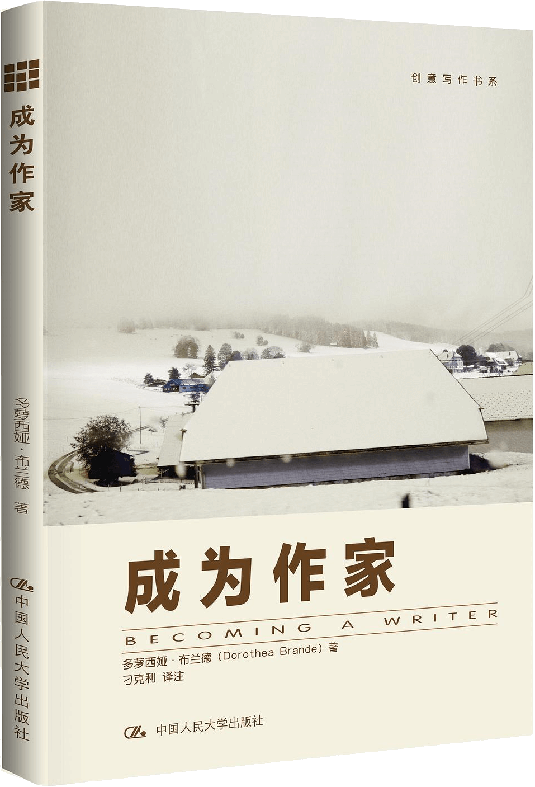

注：【】部分为笔者心得，非原文摘抄。
- 真正的好书，思想表达诚实，写作态度诚恳。
- 大多数初学写作者所遇到的困难并不是小说创作技巧所能够解决的困难，他需要解决的是我能不能写的自信心问题。
- 如果一个人急于求成、想要立竿见影地学习做好某个工作，那他可能会面对失败，因为没有任何一个领域能在极短的时间内一蹴而就。
- 有时候，正是因为害羞才阻碍了才思的涌动。
- 【不要为你的才华而感到难为情。——迈克尔·杰克逊】
- 【所谓“天才”，就是那些敢于发掘和释放自身才能、敢于坚持自我、敢于与众不同的人。】
- 循规蹈矩的人总是在埋头走路，而天才则神思飞扬。
- 做白日梦并不难，难就难在把白日梦转变为现实，而且还不能牺牲它所有的魅力。
- 故事产生于无意识（潜意识）。
- 瞄准你的目标前进，否则你就会惊醒你的猎物。
- 过早地谈论你写的故事是一个严重的错误。
- 批评和异议并非人格侮辱。
- 最令人羡慕的作家是那些已经认识到自身性格中有不同的属性，但是能够在不同的情形下与不同的人格和谐共处、生活、工作，并不断进步的人。
- 任何建议都要在你愿意的情况下采纳和实施。
- 如果要引导一个孩子做出改变，想象力能发挥巨大的作用。
- 想象力在主导行动方面有非常重要的作用。
- 成为作家的第一步就是要约束你的无意识，让它为你的写作服务。
- 天真的、令人满足的梦想正是小说创作的素材，是小说的第一物质基础。
- 在实际生活中，不经过斗争我们是不会享受到荣耀的；为了充当主角，往往充满了竞争。
- 每个作家都需要学习的——一是无须疲惫不堪也可以写很长时期；二是如果一个人能够克服第一波疲惫，他就发现了精力无穷的源泉，即达到了著名的“第二次高峰”。
- 如果任何时候你发现自己想象力退化或者不够活跃了，那就说明你应该给自己施加点压力。
- 你的承诺事关荣誉，必须严格认真地履行。
- 生活其实根本不会忙到你连一点时间都挤不出来。
- 避开模仿诱惑的最好办法是尽早发现自己的品味和优点。
- 你越早学会自己驾驭自己的写作特点，你的前景就越好。
- 当你开始锤炼你的写作风格时，不要有任何约束。
- 不但要严格要求自己，还要善待自己。一味地指责和漫无原则地自夸都对你无益。
- 要像作家那样阅读，唯一的途径就是任何东西都要读两遍。
- 当你在别人的写作中发现对你自己的作品有用的素材时，才是模仿对你唯一有用的方式。
- 【不要盲目地滥用流行语，要坚持自己的风格。】
- 不管读什么，都要悉心留意那些恰如其分的用词。
- 真正的天才始终都能保持盎然的兴趣和生动的记忆，就像一个敏感的孩子看到不断扩展的新世界一样。
- 每天抽出半个小时，让你自己返回到五岁孩子时的状态，睁大眼睛，充满兴趣地打量这个世界。
- 我们每个人能够做的贡献只有一个：能够为人类普遍的经验之池注入我们从各自角度看世界所得到的点滴体会。从某种意义上说，每个人都是独一无二的。
- 诚实是保持作品连贯性的最好源泉。
- 如果你知道自己喜欢什么，如果你清楚自己对生活中绝大多数主要问题的真正看法，你就能够写出诚实的、原创的并且是独一无二的故事。
- 要想找到自己信念的根基，需要艰苦卓绝的挖掘。
- 没有任何场景本身是所谓老套过时的，只有单调乏味、没有想象力、词不达意的作者。
- 赋予你的写作以最终价值的是你的洞察力和真知灼见；只要你写作时头脑清晰、思想诚实，就不会落入俗套。
- 最好的书来自最坚强的信念。
- 尽量轻松而快速地写作，开始和结束一个句子都要清晰有力。要减少重读的次数——只时不时地读一两个句子，以确保你在正确的轨道上。
- 换一种心态就会不同于原来的判断。
- 在你刚刚完成故事的时候，你还没有做好准备客观地阅读它。
- 当你彻底放松，重新振作，与自己的作品隔离一段时间之后，把作品拿出来重新读一遍。
- 天才的根源是无意识，而不是意识。
- 艺术家觉得自己必须沉于孤独、遁于休闲、长时间默默无言。这正是人们指责艺术家行为古怪、举止鲁莽的原因，而这也正是天才的表现。
- 能够按照自己的意志引导那种更高级的想象力、那种直觉、那种无意识所能达到的艺术水准——这才是艺术家的魔力所在，也是他唯一的真正的“秘密”。
- 学习保持头脑安静，像身体一样安静。
- 带着你写的那个粗略的大纲和你一起散步吧。
- 一部作品写出来有多好取决于你和你的生活：你有多么敏感，多么有辨别能力，你的经验能够多么贴近读者的经历，自己多么透彻地领悟了好作品的要素，以及你的节奏感有多好。